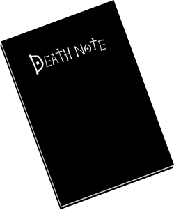

自地獄掉落人間的：死亡筆記本
全新未拆封，純黑色皮質封面。這不是一本地理筆記，也不是日記本，而是能主宰命運的神祕冊子。

商品規格與隨附贈品
【商品名稱】 死神專用極簡風筆記本
【商品售價】 當持有者壽命將至，死神將會親自收割
【隨附贈品】 高級富士蘋果一箱
使用規則說明（節錄自扉頁）
1. 名字寫上去，那個人就會翹辮子。 寫的時候脑海中必須想著對方的長相，否則同名同姓的人不會受到影響。
2. 在寫下名字後 40 秒內，可以順便寫下死因。如果沒有寫死因，一律預設為心臟麻痺。
3. 【重大警示】 凡是使用過這本筆記本的人，死後將不會上天堂，也不會下地獄。請購買前務必做好心理準備。